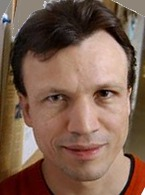

Our mission is to accelerate the growth of cumulative knowledge and innovation by organizing and curating key information about scientific articles.
Learn MoreAbout
Replicability is a cornerstone of science yet independent replication information is not currently organized in a systematic fashion, making it difficult to gauge the reliability of empirical findings. Independent verification of data and analyses is another hallmark of science, yet in practice verification is extremely challenging because available data and syntax are difficult to track down.
Curate-Science aims to solve both of these problems by providing an online platform that substantially facilitates these two crucial processes of science. At the article level, we will automatically aggregate available independent replication information and data/syntax files from pre-existing sources (e.g., from PsychFileDrawer.org, Figshare.com, and the OpenScienceFramework.org). Critically, however, registered users will also be able to add, modify, and update such information, including in-line commenting directed at specific elements of an article (e.g., data/syntax problem, statistical reporting question, etc.). For articles with available R syntax files, users will also be able to execute in-browser analyses, which will go a long way in facilitating the independent verification process so crucial to science.
Our vision is that building such a platform will accelerate the growth of cumulative knowledge and innovation by facilitating and incentivizing independent replications and verification, but also by facilitating the post-publication critique, evaluation, extension, re-analysis, and interpretation of findings (see Features, for a list of our core features).
Featured Articles
|
Feeling the future: Experimental evidence for anomalous retroactive influences on cognition and affect Bem (2011) |
|
Automaticity of social behavior: Direct effects of trait construct and stereotype activation on action Bargh, Chen, & Burrows (1996) |
|
Two birds with one stone: A preregistered adversarial collaboration on horizontal eye movements in free recall Matzke, Nieuwenhuis, van Rijn, Slagter, van der Molen, & Wagenmakers (2013) |
|
On the association between loneliness and bathing habits: Nine replications of Bargh & Shalev (2012) Study 1 Donnellan, Lucas, & Cesario (In press) |
|
Coherent arbitrariness': Stable demand curves without stable preferences Ariely et al. (2003) |
|
Washing away your sins: Threatened morality and physical cleansing Zhong & Liljenquist (2006) |
|
The Framing of Decisions and the Psychology of Choice Tversky & Kahneman (1981) |
|
Influence of inter-item associative strength upon immediate free recall Deese (1959) |

|
|
The capacity of visual working memory for features and conjunctions Luck & Vogel (1997) |

|
|
Elaboration enhances the imagined contact effect Husnu & Crisp (2010) |
|
The physical burdens of secrecy Slepian, Masicampo, Toosi, & Ambady (2012) |

|
Core Features
Lightning-fast Search with Auto-complete
Our homepage will feature a lightning-fast search with auto-complete so that you can quickly find what you're looking for. To browse, you can select from the Most Curated or Recently Updated articles lists.

Innovative Search Results Page
Easily find relevant and interesting articles via our novel indicator icons that depict availability of key article information such as replicability information, available data/syntax, reproducibility, pre-registration information, and more. Looking for articles that have specific components available? Use custom filters to only display those articles (e.g., only display articles with available data/syntax)!

Article Page: Putting it all Together
Out flagship feature is the consolidation and curation of key information about published articles, which all comes together on the article page. The screen will feature dynamically updating effect size graphs, in-browser R analyses to verify to reproducibility of results, editable fields so registered users can add, modify, or update article information, and element-specific in-line commenting.

User Profile Dashboard Page
The user dashboard will display a user's recent contributions, a list of their own articles, reading and analyses history, recent activities by other users, and customization of notifications and other user settings. Users will also be able to easily pre-register a new study and post data/syntax for a working paper on this screen.

Team
| Etienne P. LeBel Founder and Lead |
Christian Battista Chief Operational Officer |
Ben Coe Technical Advisor |
Stephen Demjanenko Technical Advisor |
Fred Hasselman Lead Statistician |
Advisory Board |
||||

|
||||
| Denny Borsboom University of Amsterdam |
Hal Pashler University of California - San Diego |
Daniel Simons University of Illinois |
Alex Holcombe University of Sydney |
E-J Wagenmakers University of Amsterdam |
| Brent Roberts University of Illinois - Urbana-Champaign |
Eric Eich University of British Columbia |
Rogier Kievit University of Cambridge |
Leslie John Harvard University |
Brian Earp Oxford University |
 |
||||
| Uli Schimmack University of Toronto |
Simine Vazire Washington University in St. Louis |
Axel Cleeremans Universite Libre de Bruxelles |
Brent Donnellan Michigan State University |
Richard Lucas Michigan State University |
Frequently Asked Questions
Sign-up To be the first to start Curating Science
Sign-up below to be notifed when the Beta is ready!


{kind=link}
{kind=link}